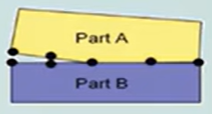
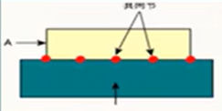
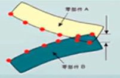
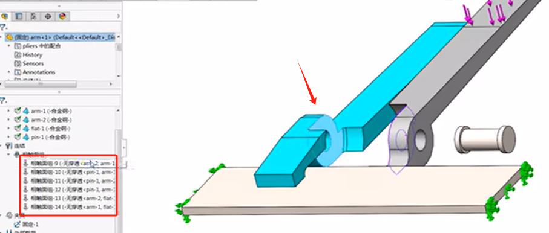

Simulation-装配体接触
前面几章的分析是在零件单实体的情况下进行的，那如果是多实体或是装配体情况下。我们就可能会需要考虑零件和零件之间的接触影响，因此本章将带大家来看一个“带接触”的装配体分析案例。
分析案例：虎钳
材料:合金钢。接触缝隙分析。分别将225N的“挤压”力作用在钳臂的末端，平板短边两侧固定。求解模型，并查看位移和应力分布情况。

装配体分析中的关键步骤如下:
1)应用材料:可以一次性对所有装配体添加材料，也可以分别添加。
2)添加夹具:和零件中添加夹具的方法一样，用以约束模型的运动。
3)施加零部件接触条件:在没有特别指明局部接触条件的情况下，零部件接触条件用来指明零件或子装配体是如何接触到一起的，或如何相互作用的。
4)应用局部接触条件:局部接触条件会取代零部件接触条件。
5)应用网格控制:应力集中或应力变化剧烈的几何区域，需要对网格进行细化操作
6)划分网格。
7)运行分析。
8)分析结果:判断结果是否足够精确，或进一步细化网格是否必要。
零部件接触
全局接触
虎钳零部件接触：使用全局接触的虎钳分析

| 接触类型 | 适用条件和范围 | 图示 | 算法 |
|---|---|---|---|
| 无穿透 | 防止两实体产生干涉运算耗时。适用于静态算例、掉落测试算例、非线性算例 |  | 罚函数法 |
| 接合 | 粘合两实体，适用于所有需要网格化的算例类型。 |  | 约束方程/节点耦合 |
| 允许贯穿 | 允许载荷在零件之间产生干涉，适用于静态算例、非线性算例频率算例、扭曲算例及掉落测试算例。 |  |
接触面组
手动设置接触面组（2022后改名为”本地交互“）
添加夹具和载荷
观察装配体结果
本次希望了解，模型是否有超过设计许用应力138MPa的应力存在，为了判断von mises是否超过最大值，可更改图解选项（如下图）。

对于装配体来说，有些零部件可能被遮挡或是无需显示在图面上，则可以利用【图解定义-高级选项-仅显示选定实体上的图解】。

手柄接触
所需的力
使用局部接触的虎钳分析
局部接触
局部接触类型。无穿透局部接触条件

正确设置接触

总结
本章中，我们对带有多种接触条件的一个简单虎钳装配体进行了分析。为简化几何体，我们压缩了平板零件，它可以通过对钳头加载固定几何体的夹具来替代。
分析完成后，我们发现最大Von Mises 应力为93MPa。这个应力低于指定的设计强度138MPa。为了确保应力结果，应当细化网格来保证应力是收敛的。
此外，产生的最大位移为0.393mm，使用这个结果来更改加载的载荷，以研究当载荷大到手柄接触到一起时发生的状况。接触条件可以分为两种不同的类别:【零部件接触】和【局部接触（相触面组）】。本章对两种类型的接触都进行了介绍。局部接触优先于所有零部件接触，而所有用户定义的零部件接触又优于顶层装配体层级的零部件接触(本质上表现为针对整个装配体的全局接触条件)。
当零部件接触应用到零件或装配体的初始接触面时，局部条件可以允许存在间隙和初始的分离。本章还介绍了各种类型的接触属性和选项，即【接合】、【允许贯通】、【无穿透】、【冷缩配合】和【虚拟壁】。我们采用了线性准则(输入和输出线性相关)来放大载荷，以达到夹紧钳的目的。最后考察了线性材料分析的局限性，并介绍了接触应力。
提问：
Q1全局接触的条件类型？
Q2局部接触的条件类型？
Q3练习双环装配体